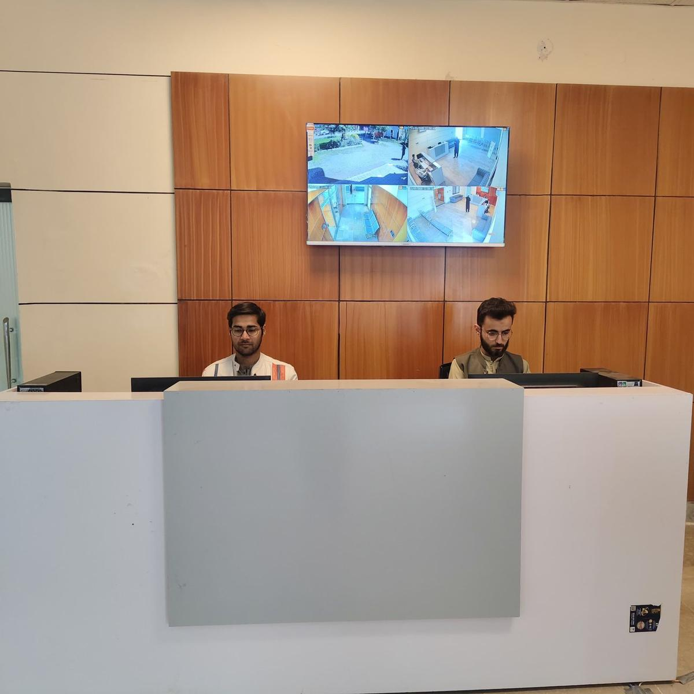
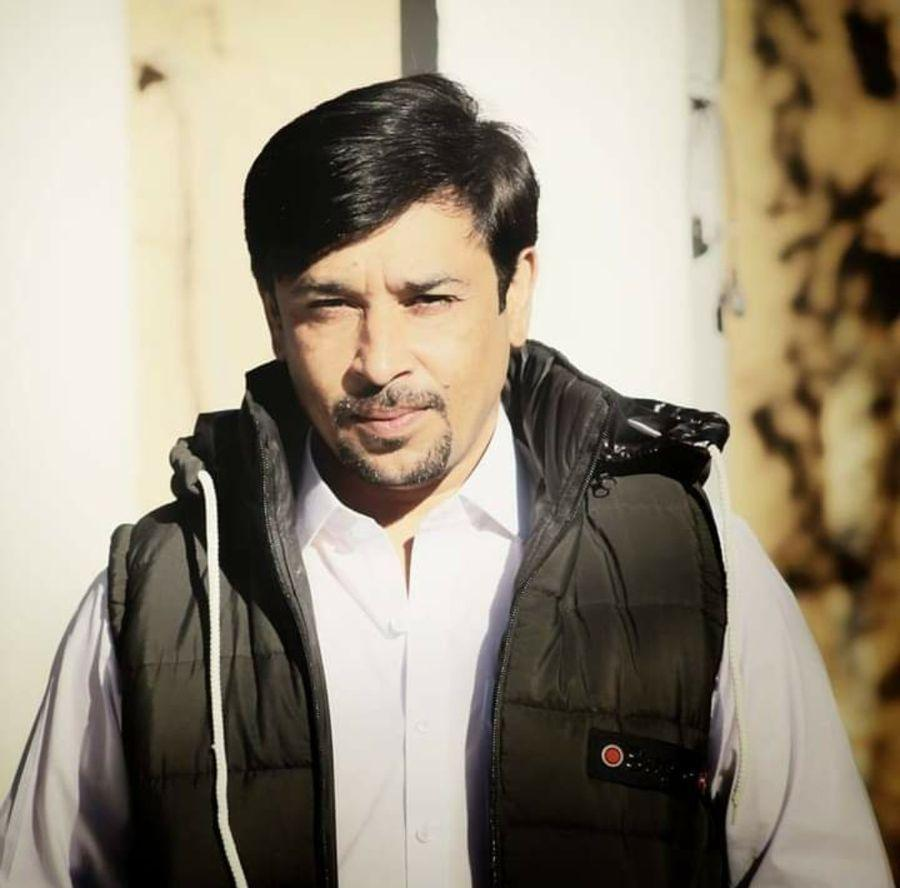
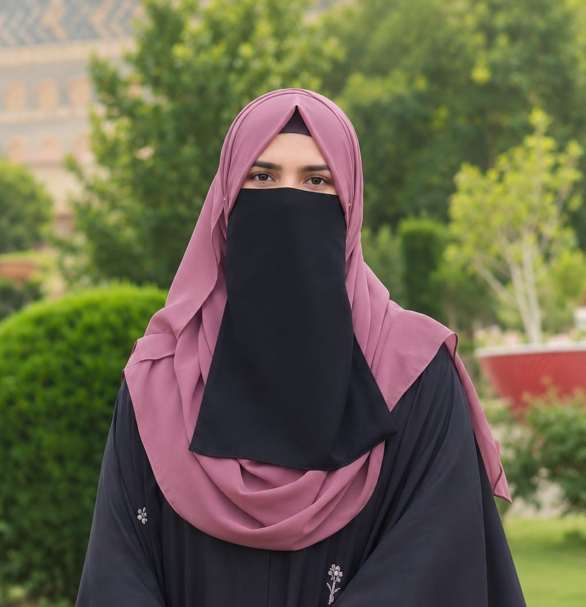

15DEC
National Youth Innovation Summit
A flagship event bringing together young innovators, industry mentors and investors to showcase ideas and explore collaboration.
The Youth Development Center at Kohat University of Science & Technology brings courses, internships, events and mentorship together for every student.
Everything YDC does sits under one of the 4 E’s from our logo. Pick the one that matches what you need right now.
Scholarships, academic workshops and mentorship to build strong foundations.
Career counseling, internships and job placement support.
Societies, events and leadership roles that connect you to campus life.
Plantation drives and awareness campaigns for a greener KUST.

We are committed to empowering youth through career counseling, entrepreneurship support and job placement. Through student societies and activities we build leadership, teamwork and a positive attitude.
Register early. Some seats are limited.
A flagship event bringing together young innovators, industry mentors and investors to showcase ideas and explore collaboration.
Expert-led sessions on career planning, CV building, interview preparation and navigating the job market.
A 3-day intensive bootcamp covering ideation, business modelling, pitching and funding opportunities for student entrepreneurs.
Build skills, earn experience and get a voice in how YDC runs.
Seminars, certificates and conferences at KUST. Tap a photo to enlarge it.
Incharge, YDC / CHRCD

Graphic Designer
Graphic Designer, Intern

Web Developer, Intern
Register in two minutes. We will confirm by email or WhatsApp.